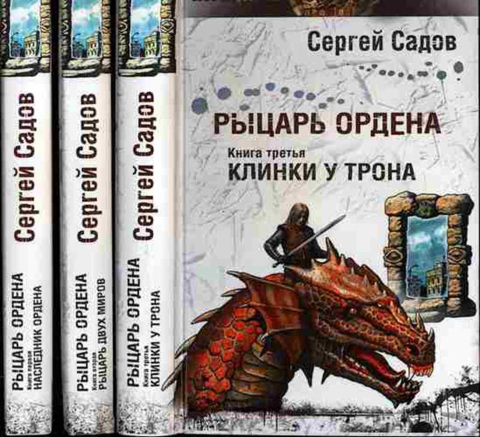
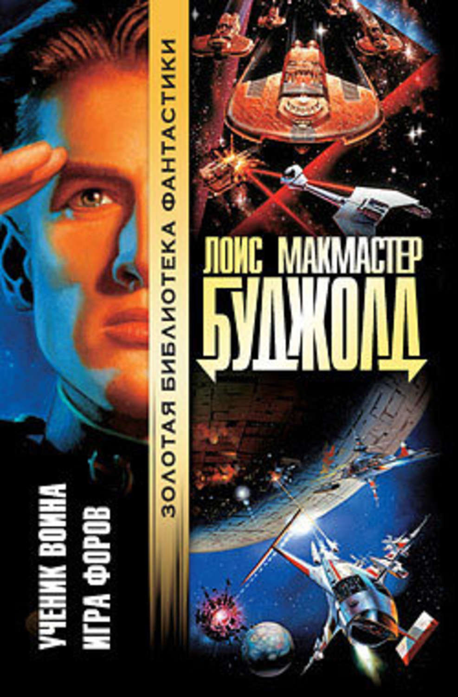
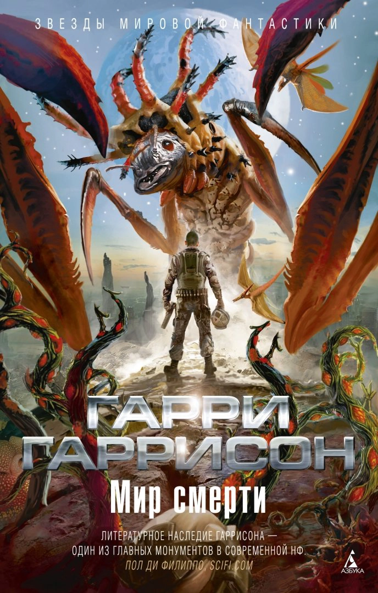

Что делать дракону, который ощущает себя человеком, страдает амнезией и почему-то обладает знаниями по физике и генетике ? Всего-то и надо, что заполучить головную боль в виде девицы,навязанной в качестве "откупа" нерадивыми крестьянами.
И жизнь на Земле, погрязшей в средневековье, взрывается. Церковь терпит поражение за поражением, рыцарские турниры сменяются экспедициями в космос, а один-единственный дракон кладёт начало целой расе крылатых мудрецов.
П.Р.Шумилов, 1999г
"Рыцарь Ордена"
(в 3-х томах)
Роман жанра «попаданчества» из тех времен, когда это еще не было мейнстримом. Наверное, поэтому герой Садова так не похож на современных предприимчивых «попаданцев», которым все даётся по щелчку пальцев.
Когда-то мир был един. Но, осознав, какую опасность может представлять союз магии с передовыми технологиями, с техническим прогрессом в целом, могущественные волшебники разделили единое целое на две части. Технологии достались нашему миру, магия – параллельному. Но спасительному равновесию угрожает маг и диктатор, стремящийся к власти. И только в нашем мире остался человек, способный противостоять ему.Надо только открыть дверь.Дверь и открылась, только не для героя, я для обыкновенного мальчишки.
Сергей Садов, 2005г
"Ученик воина"
(cерия о Майлзе Форкосигане)
Майлз Форкосиган — сын высокопоставленного сановника при дворе императора планеты Барраяр,по старой дворянской традиции пытается сделать карьеру военного. Но это задача не из легких - Майлз получил синдром хрупких костей и проблемы с физическим развитием еще в утробе матери, когда та едва пережила покушение боевым отравляющим газом.
Провалив вступительный экзамен по физподготовке в Имперскую Академию, с горя он отправляется на родину матери — колонию Бета, где оказывается втянутым в интригу с торговлей оружием. Ввязавшись в это сомнительное предприятие, Майлз поневоле попадает в самую гущу локальной войны. Только благодаря врождённым организаторским способностям он не просто берет ситуацию под контроль, но и ухитряется возглавить целый флот наёмников, названный им Дендарийским. Отныне вся Галактика будет с восторгом повторять его новое имя — адмирал Нейсмит...
Lois McMaster Bujold, 1986г (пер.2001г)
"Нeукротимая планета"
(из цикла "Мир Смерти"/Deathworld)
Язон динАльт – ловкий галактический мошенник, успел хорошенько «наследить» на многих из тысяч разбросанных по Вселенной обитаемых планет. Нет, разумеется, он не шулер и не наивный лох, чтобы его схватили за руку, – он просто любит играть по-крупному и умеет выигрывать именно тогда, когда особенно хочет. Это, конечно, не ахти какая, но все-таки репутация, обладателю которой обеспечен кое-где весьма теплый прием. Например, на неукротимой планете Пирр, которую недаром называют Миром Смерти…
Каково это - быть колонистом с Земли и биться за выживание со всей планетой сразу? Планета Пирр не оставляет поселенцам ни малейшего шанса, набрасываясь на них из-за каждого угла и подстерегая за каждым поворотом множеством смертельно опасных для человека существ. За долгие годы пирряне сами превратились в супер-солдат, борясь с враждебными формами жизни и живя в тяжелой гравитации планеты, но даже они отступают шаг за шагом перед все более многочисленной и опасной флорой и фауной, и уже практически приперты к стене последнего космодрома. И кто бы мог предположить, что победу в этом затянувшемся поединке может принести один "хилый инопланетник" с даром "чувствовать" игральные кости?
Harry Harrison, 1960г(пер.1991г)